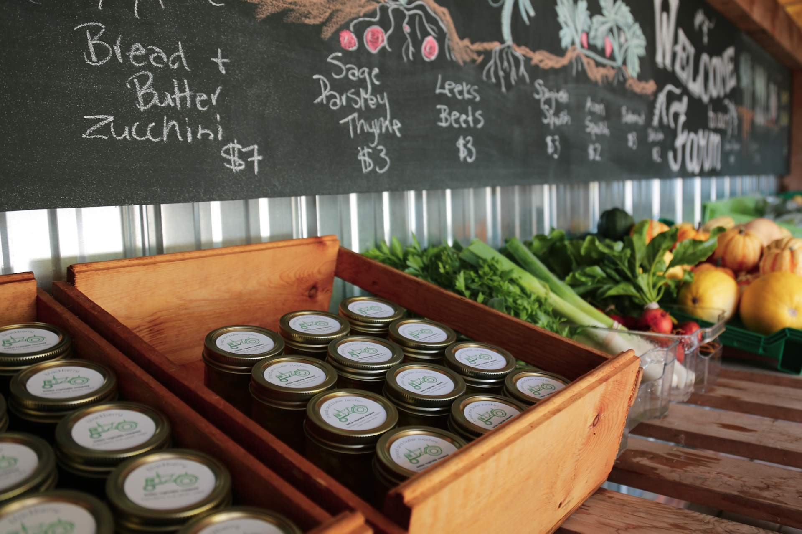

kehler vegetable company
i'm so glad you stopped by!
Welcome to Kehler Vegetable Company! We are a family-owned, small mixed market farm located on a 20 acre farm in the Comox Valley. We proudly provide fresh vegetables, berries, and eggs from our pasture. Passionate about supporting our community, we're committed to offering the best local produce. Whether you’re here to pick up seasonal vegetables, fresh berries, or our pasture-raised eggs, eggs, we’re excited to share what we grow with you.
Learn MoreOur farmstand runs on the honour system and is stocked daily at the farm gate—right where the freshest food is waiting for you! Thank you for supporting local agriculture and being part of our story!

About Us
Nestled in the heart of Black Creek, Kehler Vegetable Company is a small, family-owned farm with deep roots in our community. On our 20-acre farm in the scenic Comox Valley, we are committed to growing high-quality, seasonal produce that nourishes both our neighbors and the land we care for.We take great pride in growing fresh, nutrient-dense vegetables, berries, and pasture-raised eggs, all while using sustainable farming practices that support the health of the ecosystem. Although we’re not officially certified organic, we grow all of our produce using organic methods, focusing on soil health, natural pest control, and crop rotation to maintain a thriving, resilient farm. We believe in farming with respect to the land and work to ensure that what we grow is not only good for you, but also for the environment.
At Kehler Vegetable Company, we believe that great food starts with great farming. That’s why we take a hands-on approach, from carefully selecting the right crops to tending to them throughout the growing season. Whether it’s through composting our own manure or using innovative tools like flame weeders and row covers, we focus on practices that are gentle on the land and yield the best produce possible.
To see what's in season and browse our current selection, click below to explore our farmstand offerings!
browse our selectionhow to shop with us
Our farmstand is located right at the farm gate and is open seasonally for your convenience. We operate on the honour system, making it easy to shop and support local agriculture. Simply stop by, browse our selection, and leave payment in the collection box. We are open Wednesday through Friday from 10 a.m. to 5 p.m., and Saturday from 9 a.m. to noon. For those seeking larger quantities, we also offer wholesale orders. Please reach out to us for more details about this option.
Thank you for supporting Kehler Vegetable Company and for being a part of our story. We’re excited to continue growing and sharing fresh, local food with you!
browse our selection community and events
at kehler vegetable company, we believe that farming is about more than just growing food—it's about building connections, supporting sustainability, and nurturing a healthier, more vibrant community. that's why we actively participate in local events and host gatherings at our farm that celebrate not only the bounty of the land, but also the values that matter most to us: sustainability, minimalism, and living in harmony with nature. throughout the year, we host a variety of events designed to bring people together around healthy living and local agriculture. from hands-on workshops about growing your own vegetables and creating sustainable gardens, to cooking classes focused on plant-based recipes using fresh, seasonal ingredients, our events aim to inspire and empower our community to make mindful choices about the food they eat and how they live.
we also collaborate with like-minded organizations to host talks and panel discussions on topics like sustainable farming, minimalist living, and the joys of a vegan or vegetarian lifestyle. these events often include local experts, farmers, and thought leaders, offering a wealth of knowledge and insight into how we can all live more consciously and sustainably.
past events, like our spring planting party and farm-to-table cooking class, have been a great success, bringing together families, friends, and neighbors for a day of learning, sharing, and celebrating what our farm and the local community have to offer. Looking ahead, we're excited to host our Harvest Celebration this fall, where we’ll showcase the season's best produce, offer cooking demos, and have a chance to meet other local farmers and food lovers.
we also make a point of supporting and promoting other community events that align with our values. qhether it's the comox valley farmers market or sustainability week, we’re always looking for ways to connect and support the larger movement toward more sustainable and conscious living.
join us
we’d love for you to be part of our next community event! Keep an eye on our upcoming calendar, and be sure to follow us on social media for updates on workshops, farm tours, and community initiatives. together, we can create a more sustainable, healthy, and connected future.
upcoming events